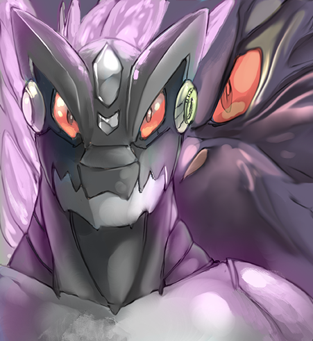

VAC Online: Player Decro
Written by TwistedSnakes
Illustrated by Croft
It was supposed to be a relaxing weekend of fun and games. Decro and his friends had pre-ordered "Virtual Adventure Cataclysm Online", or VAC online for short and were prepared to log on the moment the login servers opened.
Decro, a white arctic wolf, was seated in a specially-designed chair that was designed to provide a fully immersive experience as it closed around the player like a suit of armour. The VR headset was secured around his head and a spinal attachment was clamped to his back.
"You guys ready?" he asked his friends over the online voice chat.
"Sure!", "Duh," "You bet," came all the excited replies and the wolf grinned back.
"Let's go," he said as they all logged onto the servers.
Decro's first few moments in the game had been intense; not only were the graphics realistic but every single sensation was fed to his body as if he were truly experiencing them in real life. If not for the fantasy trees and shrubs, floating islands in the air, and the triple moon in the sky, he could've sworn that this was real life. He was standing on the top of a gentle hill among rolling fields of pastel green, blue, and pink grass.
"Whoa," he heard a voice behind him and he turned around to see a minotaur, "Decro, you look just like yourself!"
Decro chuckled at the statement; a weird one to make but very applicable all the same. He looked at his arms and body to see everything, from his fur to his hands, from his tail to his body markings, looking exactly as how it in real life.
"You're looking like yourself too, Zig," Decro grinned, "So does the sensory feedback work?" Without waiting for a response, he gave the minotaur a friendly punch to the side of his shoulder.
"Ouch! That actually hurt!" Zig held his shoulder in pain.
"Whoops, sorry" the wolf grinned sheepishly, but before he could react, the minotaur charged at him and tackled. "Revenge!" Zig yelled. The both of them rolled down the hill as the grass cushioned their descent until they were at the bottom.
"Are you kids done?" a female voice asked sarcastically. Decro immediately recognized her distinct voice: Jasmine the flamingo. She was standing beside Raxmei the rat, another friend.
"Just testing out the combat system," Zig grinned innocently before giving Decro a punch to his shoulder.

~ End ~